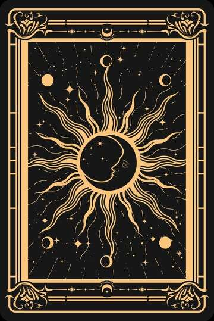

✦ 心灵塔罗牌
选择你的占卜方式
两种仪式，同样的命运揭示
选择最适合你的方式，开启今日占卜
🖐️
沉浸体验
手势模式
摄像头识别手势
握拳选牌，张手翻开
🖱️
快捷体验
鼠标模式
无需摄像头
点击卡牌即可抽取
摄像头偏好
📷 前置
📸 后置
进入后可随时切换
✦
请先选择方式
← 换个方式
🔄 切换摄像头
🖱️ 鼠标模式 · 点击旋转木马上的卡牌即可抽取
✦
✧
✦
☽
✧
心灵塔罗牌
触碰灵珠，开启命运之门
✦ 开启占卜仪式 ✦
点击后将请求摄像头权限以识别手势
✦
正在唤醒塔罗牌灵…
初始化中…
✦ 在开始之前 ✦
塔罗牌回应的是你内心的声音。
请闭上眼睛，默念你最想探寻的方向。
✦ 选择今日意图 ✦
🌙 今日
♡ 爱情
✦ 事业
🙏 已选定意图，开始占卜
✊
握拳开始仪式
塔罗占卜
过去
现在
未来
☀
☽
★
★

🖐️ 张开手掌释放卡牌
✦ 命运揭示 ✦
重新占卜
保存分享
🔍 调试面板
✕
手势:
无
状态:
idle
手数:
0
FPS:
0
置信度:
0
🔍
🪞
✦ 命运揭示 ✦
心灵塔罗牌 · RIDER-WAITE TAROT